خواص مواد مهندسی
دکتر اعظم بیگی خردمند
منابع
- W. F. Smith, Principles of Materials Science and Engineering, 3rd Edition, McGraw Hill, 1996.
- K. G. Budinski and M. K. Budinski, Engineering Materials: Properties and Selection, 7th Edition, Prentice Hall, 2002.
فصل اول
تاریخچه
- متالورژی به عنوان صنعت مادر حدود 6-7 هزار سال پیش شکل گرفت.
- مس اولین فلزی بود که به صورت خالص استخراج شد.
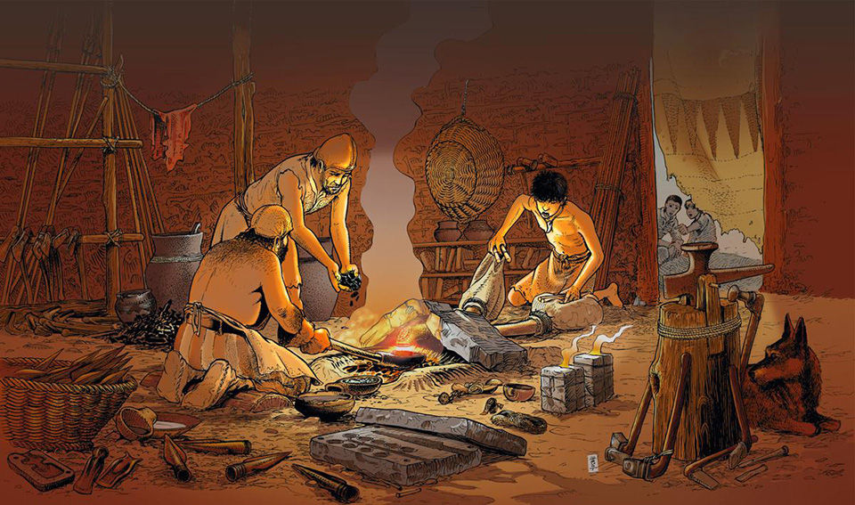
انواع مواد مهندسی
فلزات:
- رسانای خوب حرارت و الکتریسیته
- شکلپذیر (به دلیل پیوند فلزی)
سرامیکها:
- پیوندهای کووالانسی و یونی
- سختی و مقاومت حرارتی بالا
پلیمرها:
- تشکیل شده از مولکولهای بزرگ و طویل
فلزها
چیدمان اتمی منظم و فشردهچگالی بالاصلبیتاستحکامانعطافپذیریمقاومت به رشد ترکهدایت گرماییهدایت الکتریکیعدم انتقال نوربیشترین کاربرد در مهندسی
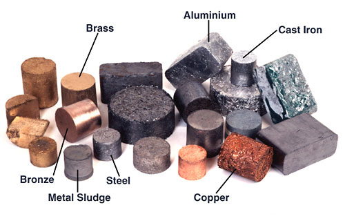
فلزات آهنی
چُدنها: آلیاژهای آهن-کربن با کمتر از 2% کربنچُدن سفیدچُدنهای گرافیتیچُدن خاکستریچُدن داکتیل (نشکن)چُدن مالیبل (چکشخوار)فولادها: آلیاژهای آهن-کربن با بیشتر از 2% کربنساده کربنیکم آلیاژزنگ نزنابزار
سرامیکها
تُردمقاومت دماییانعطافپذیری کممقاومت شیمیاییعایق جریاناستثنا: برخی الکتروسرامیکها رسانا هستند(در ساخت ترانزیستورها، یکسو کنندهها، و ICها)
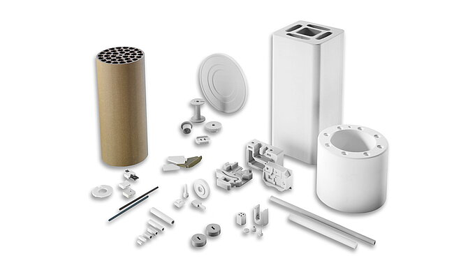
کاربرد سرامیکها
مصالح ساختمانیشیشهها و شیشههای هوشمندسایندههامتهها و ابزار برشسیمانهاسرامیکهای پوششیبیوسرامیکهافیلترهاکاتالیستهاالکتروسرامیکها
پلیمرها
مقاومت دماییتُرد در دمای زیر صفرشکلپذیر در دمای بالامتلاشی در دمای خیلی بالاکم چگالعایق جریانپایداری شیمیایی در دمای محیط
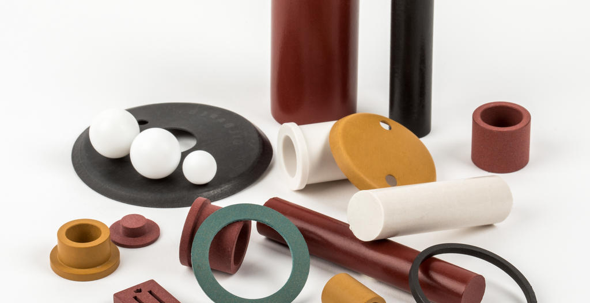
مقایسه سه ماده اصلی
| ویژگی | سرامیک | فلز | پلیمر |
|---|---|---|---|
| سختی | بسیار بالا | متوسط | کم |
| مدول الاستیسیته | بالا | متوسط | پایین |
| استحکام در دمای بالا | بسیار بالا | بالا | پایین |
| انبساط حرارتی | کم | متوسط | زیاد |
| شکلپذیری | کم | زیاد | زیاد |
| مقاومت به خوردگی | بسیار بالا | بسته به نوع | متوسط تا زیاد |
| مقاومت به سایش | بالا | متوسط | کم |
| رسانایی الکتریکی | کم | بسیار بالا | بسیار کم |
| چگالی | بالا | بالا | کم |
| رسانایی حرارتی | کم | بالا | بسیار کم |
کامپوزیتها
- اجزاء مواد کامپوزیتی از نظر شکل و ترکیب شیمیایی متفاوت هستند.
- اجزاء در یکدیگر حل نمیشوند (مخلوط میشوند).
- ایجاد موادی با خواص جدید.
- دارای خواص بهتر نسبت به اجزاء اولیه.
 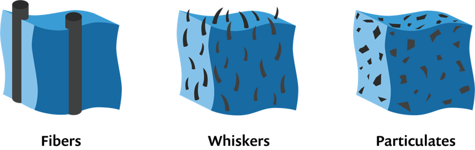
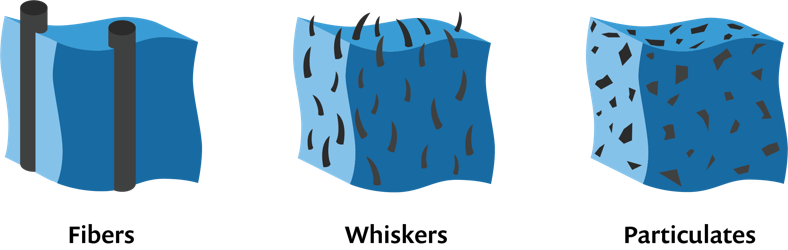
مواد مدرن
- نیمههادیها
- مواد زیستی
- مواد هوشمند
- مواد نانو
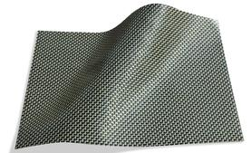
مواد هوشمند بر اساس محرکها
- آلیاژ حافظه شکلی
- سرامیک پیزوالکتریک
- مواد مغناطیسی
- مواد الکترو/مغناطیسی
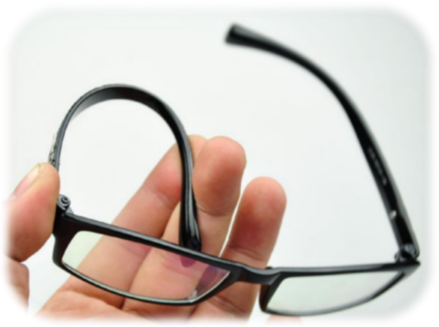
محورهای اصلی علم مواد
- فرایند
- ساختار
- خواص
- کارایی
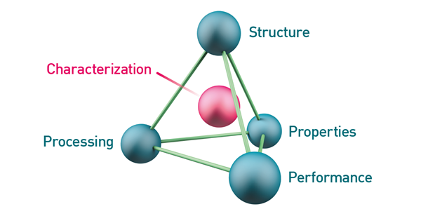
تأثیر محورهای اصلی بر هم
- علم مواد به بررسی ارتباط بین چهار عنصر میپردازد:
- ساختار تابعی از فرایند ساخت است.
- عملکرد تابعی از ویژگیهای ماده است.
برای مثال، تأثیر فرایند در ساختار، ویژگی و عملکرد در برابر نور.
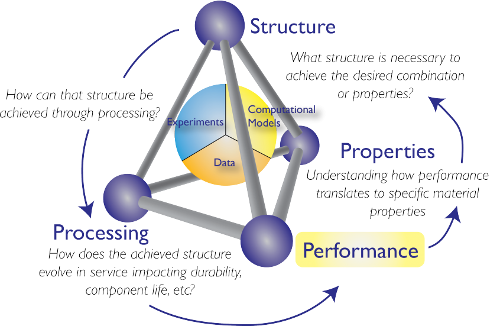
تأثیر فرایند ساخت در آلومینیم اکسید
- یک قرص تکبلور و شفاف
- یک قرص چندبلوری نیمهکدر
- یک قرص چندبلوری کاملاً مات
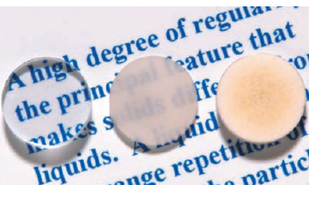
چرا علم مواد؟
برای موفقیت به عنوان مهندس، باید اطلاعاتی درباره ساختار و ویژگیهای مواد و تأثیر آنها در فرایند ساخت برای دستیابی به عملکرد بهتر داشته باشیم.
سطوح ساختار مواد
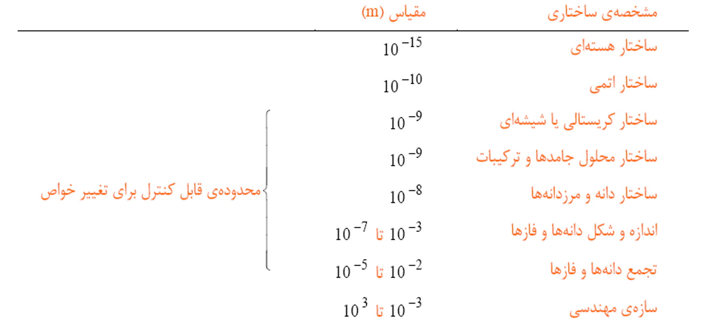
حساسیت به ریزساختار
خواص غیر حساس:
- دانسیته
- مدول یانگ
- ضریب انبساط حرارتی
- گرمای ویژه
خواص حساس:
- استحکام تسلیم
- استحکام کششی
- شکلپذیری
- چقرمگی شکست
- استحکام خستگی
- استحکام خزشی
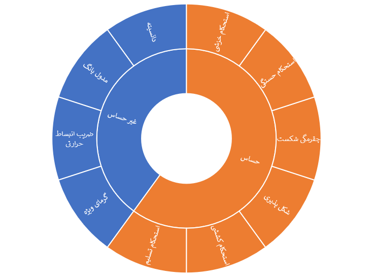
انواع خواص مواد
- مکانیکی
- الکتریکی
- حرارتی
- مغناطیسی
- نوری
- استهلاکی
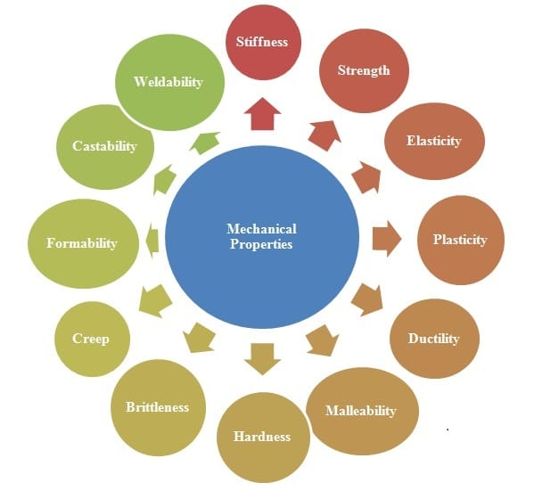
ساختار اتمی
اتم:
- پروتون (مثبت)
- نوترون (خنثی)
- الکترون (منفی)
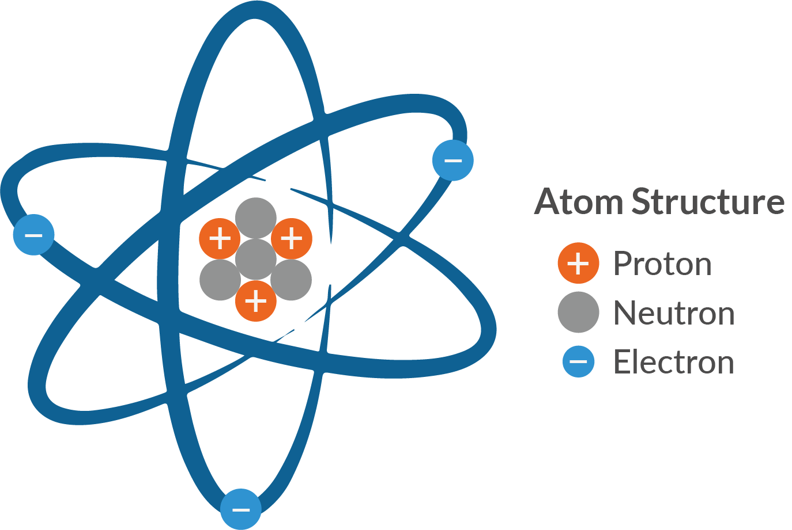
نمایش ساختار هستهای اتم:
- عدد اتمی ($Z$): تعداد پروتونها
- عدد جرمی ($A$): تعداد پروتونها + نوترونها
- عدد آووگادرو ($N_A$):
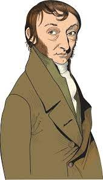
ساختار الکترونی
والانس (n):
- تعداد الکترونهای لایه آخر
- تعیینکننده خواص شیمیایی
دستهبندی بر اساس والانس ←
الکترونگاتیویته:
- تمایل به جذب الکترون (الکترونگاتیو) مثل نافلزات
- تمایل به از دست دادن الکترون (الکتروپوزیتیو) مثل فلزات
| n | نوع |
|---|---|
| 1, 2, 3 | فلز |
| 4 | شبه فلز |
| 5, 6, 7 | نافلز |
| 8 | گاز نجیب |
جدول تناوبی:
- اساس چیدمان: آرایش الکترونی عناصر
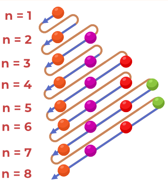
پیوندهای بین اتمی
پیوندهای اولیه (اصلی) (پیوند قوی):
- یونی
- کووالانسی
- فلزی
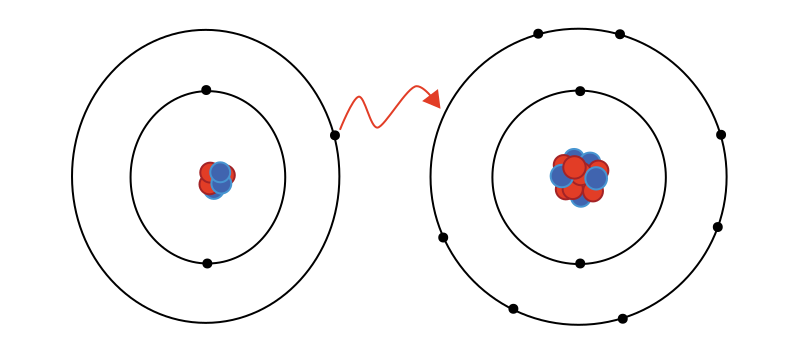 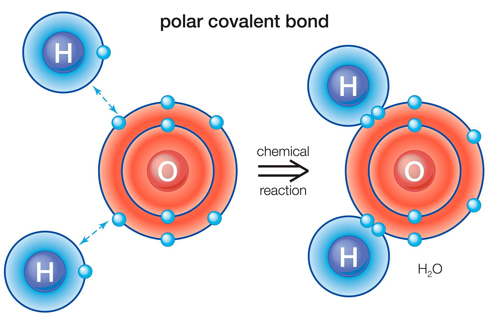 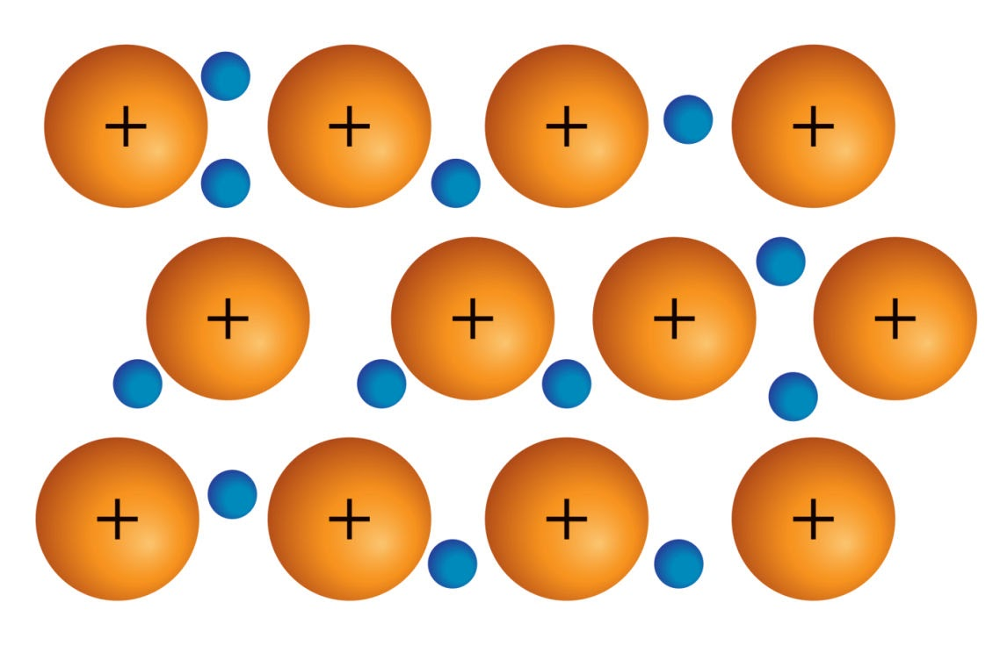
پیوندهای ثانویه (فرعی) (پیوند نسبتاً ضعیف):
- واندروالس
- هیدروژنی
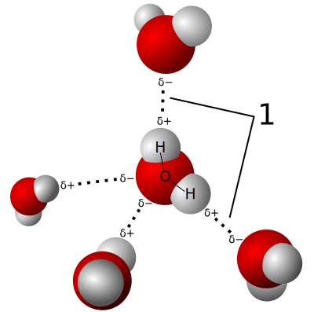 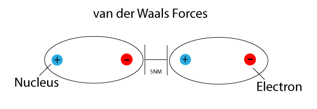
نکته: در این پیوندها انتقال و اشتراک الکترون وجود ندارد.
پیوند فلزی
- در فلزات و آلیاژها
- مشخصه: الکترون آزاد
- مدل: "دریای الکترون آزاد"
- ماهیت: غیرجهتدار
- عامل اتصال: جاذبه بین الکترونهای آزاد و هستههای یونی با بار مثبت
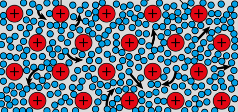
نکته 1: در مدل دریای الکترون آزاد، الکترونهای آزاد به اتمهای خاص تعلق ندارند.
نکته 2: الکترونهای غیر والانس باقیمانده و هسته اتم، تشکیل هستههای یونی با بار خالص مثبت را میدهند که در دریای الکترون شناورند.
پیوند یونی
- در بسیاری از سرامیکها و ترکیباتی که شامل یک الکترونگاتیو و یک الکتروپوزیتیو هستند
- مشخصه: انتقال و داد و ستد الکترونها
- ماهیت: غیرجهتدار
- عامل اتصال: جاذبه الکترواستاتیکی بین یونهای مثبت و منفی
- عنصر فلزی با دادن الکترون لایه ظرفیت به نافلز، به هر دو عنصر امکان رسیدن به آرایش گاز پایدار را میدهد.
- هر چه اختلاف الکترونگاتیو (فلز-غیرفلز) بیشتر باشد، پیوند یونی قویتر یا انرژی پیوند بیشتر است.
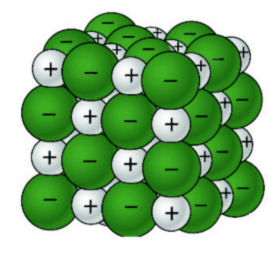
ویژگیها:
- سخت
- شکننده
- عایق
- نقطه ذوب بالا
- عدم قابلیت تغییر شکل پلاستیک
- هدایت الکتریکی بسیار کم (در حالت مذاب و توسط یونها)
پیوند کووالانسی
- در الماس، سیلیکون و ژرمانیوم
- بین دو غیر فلز یا بین هیدروژن و یک غیر فلز
- مشخصه: شراکت الکترونها
- ماهیت: جهتدار
- عامل اتصال: نزدیک شدن دو هسته موجب ایجاد اربیتال الکترونی جدید شامل الکترونهای شراکت گذاشته شده میشود.
- به علت نامتقارن بودن شکل اربیتالها، قدرت پیوند بین اتمی در تمام جهات یکسان نیست.
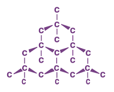
ویژگیها:
- ترد
- چکشخواری ضعیف
- سختی بسیار زیاد (الماس ≠ بیسموت)
- نقطه ذوب بسیار بالا
- عایق الکتریکی (برای حرکت الکترون باید پیوند شکسته شود که به دما و انرژی زیاد نیاز دارد)
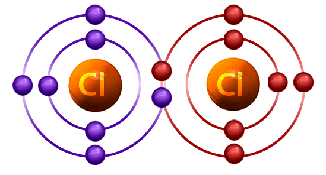
پیوند واندروالس
- بین گازهای ایدهآل (مانند آرگون، نئون) یا مولکولهای پایدار مانند متان و مواد آلی دیگر در حالت مایع یا جامد
- ارتباطی به الکترونهای ظرفیت ندارد
- عامل اتصال: دو قطبیهای مولکولی یا اتمی است که به صورت دائم یا موقتی به وجود میآیند.
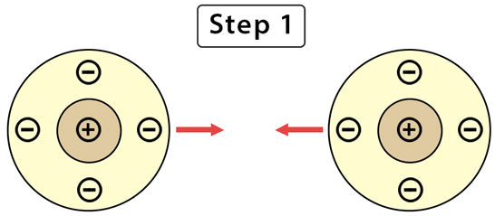
ویژگیها:
- پیوند ضعیف
- در اثر ارتعاشات حرارتی از بین خواهند رفت
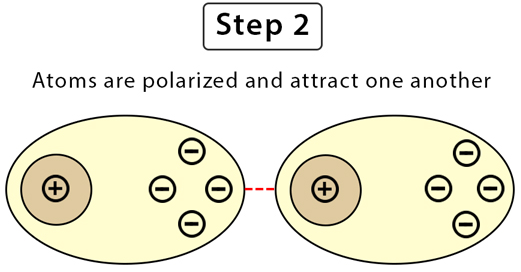
پیوند هیدروژنی
- در مولکولهای غیر آلی (مانند آب) و آلی (مانند DNA)
- عامل اتصال: همراه شدن هیدروژن با یکی از عناصر با الکترونگاتیوی بالا (اکسیژن، نیتروژن، فلوئور)
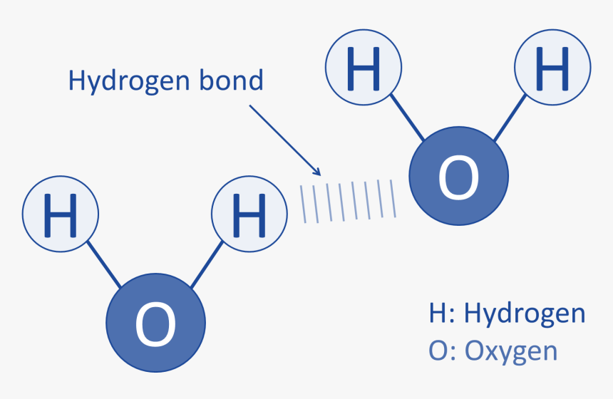
ویژگیها:
- پیوند ضعیف
- در اثر ارتعاشات حرارتی از بین خواهند رفت
پیوندهای هیبریدی (ترکیبی)
- در بسیاری از مواد، پیوندهای بین اتمی ترکیبی از پیوندهای اولیه یا ثانویه است.

انرژی پیوند
- منحنی تغییرات نیروی بین اتمی (و انرژی پتانسیل) بر حسب فاصله بین اتمی
- با نزدیک شدن دو اتم به هم؛ دو نوع نیروی بین اتمی (جاذبه و دافعه) بین آنها شکل میگیرد.
- نیروی جاذبه: وابسته به نوع پیوند اتمی از نیروی بین مراکز با بار مثبت و منفی است.
- نیروی دافعه: همپوشانی الکترونهای لایه آخر که با نزدیک شدن دو اتم، افزایش مییابد.
- نیروی خالص: مجموع این دو نیرو است.
نکته: هنگامی که نیروی خالص برابر صفر شود، اتمها در فاصله تعادل قرار دارند.
انرژی پیوند
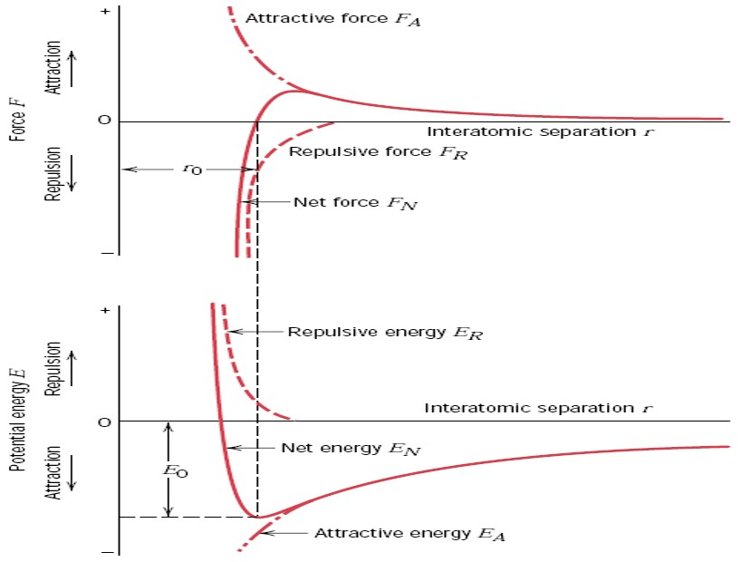
نکته: مهمترین مشخصه منحنی انرژی پیوند، نقطه مینیمم آن است. انرژی متناظر با فاصله تعادلی، انرژی پیوند است. انرژی پیوندی حداقل انرژی برای جدا کردن یا شکستن پیوند است.
| نوع پیوند | انرژی پیوند $(kJ/mol)$ |
|---|---|
| یونی | $625-1550$ |
| کووالانسی | $520-1250$ |
| فلزی | $100-800$ |
| واندروالسی | $< 40$ |
انرژی پیوند
افزایش انرژی پیوند:
- دماي ذوب افزايش مییابد
- مدول یانگ افزایش مییابد
- ضریب انبساط حرارتی کاهش مییابد
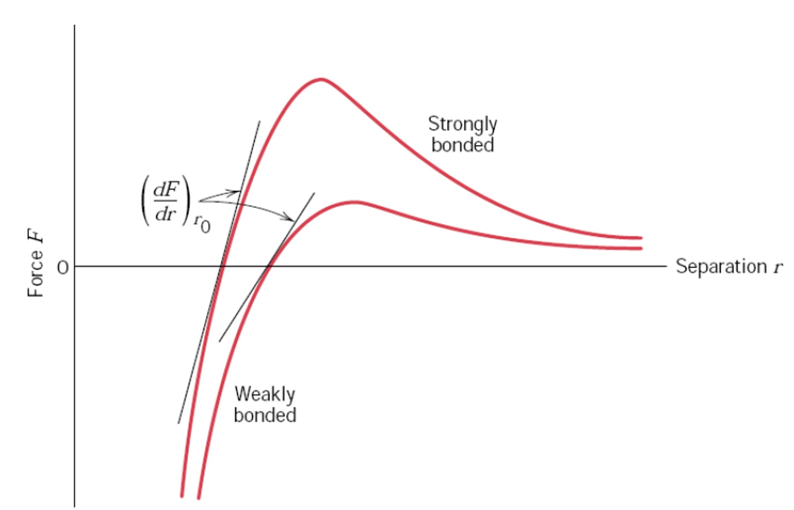
در مقیاس اتمی: مقدار مدول یانگ تابعی از مقاومت پیوند اتمی در برابر تغییر فاصله تعادلی اتمهاست. مدول یانگ متناسب با شیب نمودار نیروهای بین اتمی بر حسب فاصله در نقطه تعادلی است:
$$ aE \propto - \left(\frac{dF}{dr_0}\right)_{r = r_0} $$
فصل دوم
نظم اتمی
- بی نظم: مانند گازها
- کریستال: نظم بلند دامنه، عدد همسایگی ثابت، نظم تکرار شونده (آرایش پریودی) طی انجماد
- آمورف: نظم کم دامنه، عدد همسایگی متغیر، نظم تا چند فاصله اتمی حفظ میشود، سریع سرد کردن مذاب با سرعت بالا برای تولید آمورف فلزی
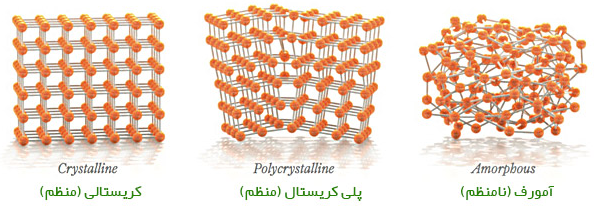
ساختار کریستالی
کریستال: مجموعه اتمهایی که با نظم معین در تمام حجم توزیع شدهاند. از اتصال فرضی مرکز اتمها، سیستم سهبعدی شامل تعداد زیادی متوازیالسطوح که شبکه بلوری را تشکیل میدهند، ایجاد میشود. کوچکترین متوازیالسطوح تکرار شونده در تمام سه جهت، حجم بلور را سلول واحد کویند مینامند.
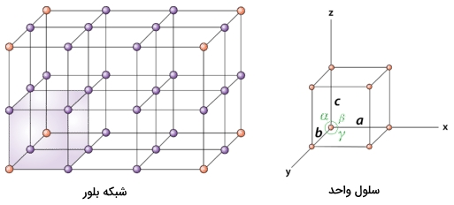
سیستمهای بلوری
دستهبندی برای راحتی ساختارهای بلوری بر مبنای شکل سلول واحد یا آرایش اتمی گروه است. این روش فقط بر پایه شکل سلول واحد بدون توجه به موقعیت اتمها در سلول واحد است. در این روش یک سیستم مختصاتی برقرار میشود که شامل:
- طول بردار در امتداد محور
- طول بردار در امتداد محور
- طول بردار در امتداد محور
- زاویه بین بردارها و
- زاویه بین بردارها و
- زاویه بین بردارها و
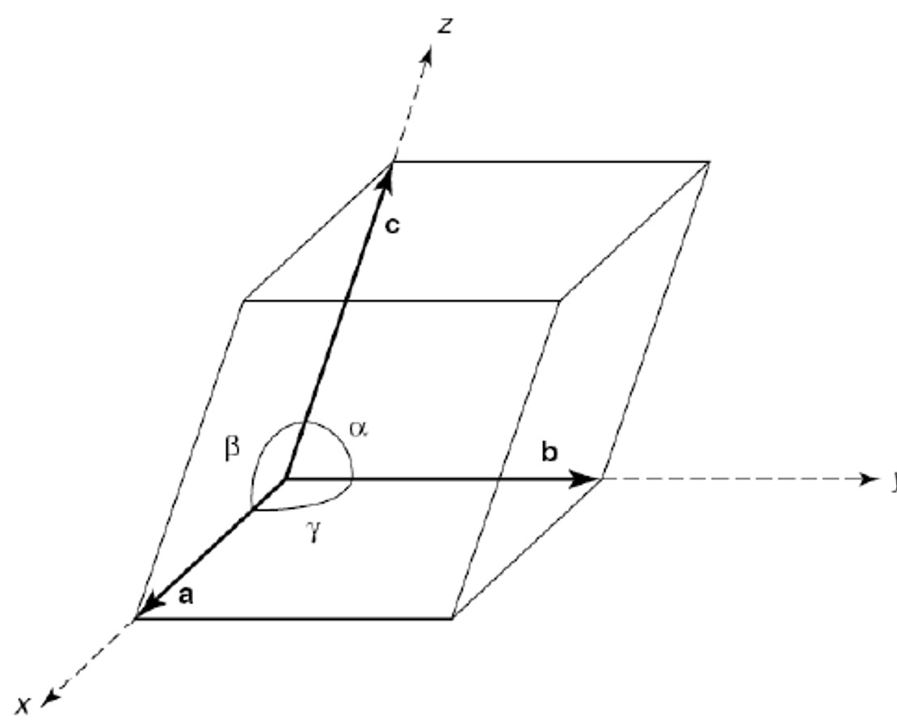
سیستمهای بلوری
هفت ترکیب احتمالی وجود دارد که هرکدام یک سیستم بلوری یا سیستم تبلور جداگانه را مشخص میکنند که ۱۴ حالت به وجود میآید و به ۱۴ شبکه براوه معروفند:
- مکعبی
- تتراگونال
- هگزاگونال
- ارتورمبیک
- رمبوهدرال
- مونوکلینیك
- تریکلینیك

سیستمهای بلوری
بیشتر فلزات از سیستمهای مکعبی یا هگزاگونال متبلور میشوند.
| حالتهای مکعبی | انگلیسی | اختصار | شکل |
|---|---|---|---|
| مکعبی ساده | Simple Cubic | SC | 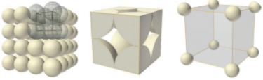 |
| مکعبی مرکزدار | Body Centered Cubic | BCC | 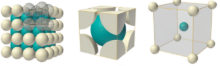 |
| مکعبی با سطوح مرکز دار | Face Centered Cubic | FCC | 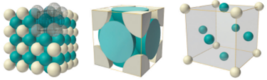 |
اندیسهای بلوری (جهات)
جهات و صفحات بلوری در فضا توسط علائمی به نام اندیسهای بلوری تعریف میگردند. عموماً از سیستم میلر برای اندیسگذاری صفحات و جهات بلوری استفاده میشود.
روش تعیین اندیسهای جهات در شبکه مکعبی:
- از مبدا مختصات برداری به موازات جهت مورد نظر رسم میشود.
- مؤلفههای بردار بر روی سه محور مختصات تعیین میشوند.
- مؤلفههای بردار به کوچکترین اعداد صحیح تبدیل میشوند.
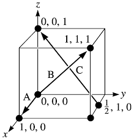
اندیسهای بلوری (صفحات)
روش تعیین اندیسهای صفحات در شبکه مکعبی:
- نقاط تقاطع صفحه مورد نظر با محورهای مختصات را مشخص کنید.
- معکوس مختصات نقاط تقاطع با محورها را محاسبه کنید.
- این مقادیر را به کوچکترین اعداد صحیح تبدیل کنید تا اندیسهای میلر صفحه به دست آید.
اندیسهای بلوری (صفحات)
اندیس میلر یک جهت در براکت و به صورت $[hkl]$ نشان داده میشود، اما تمام جهات همنوع به صورت $\langle hkl \rangle$ نمایش داده میشوند. به عنوان مثال، اندیس جهات قطری در مکعب به شکل $\langle 111 \rangle$ نشان داده میشود که شامل چهار جهت زیر است:
$$ [\bar{1}11], [1\bar{1}1], [11\bar{1}], [111] $$
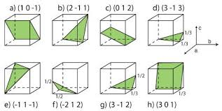
اندیسهای بلوری (صفحات)
اندیس میلر یک صفحه در پرانتز و به صورت $(hkl)$ نشان داده میشود. اما تمام صفحات همنوع به صورت ${hkl}$ نمایش داده میشوند. به عنوان مثال، اندیس صفحات اکتاهدرال در مکعب به شکل ${111}$ نشان داده میشود که شامل چهار صفحه زیر است:
$$ (1\bar{1}1), (\bar{1}11), (11\bar{1}), (\bar{1}\bar{1}\bar{1}) $$
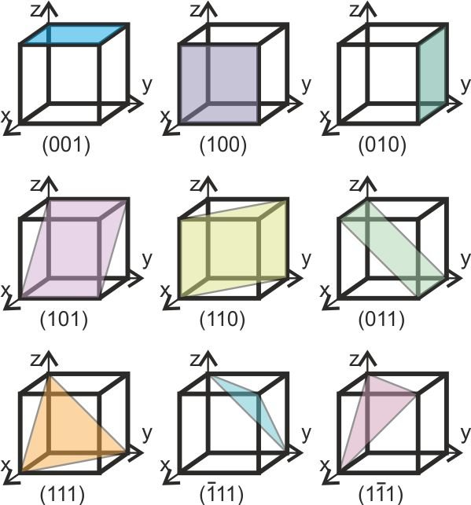
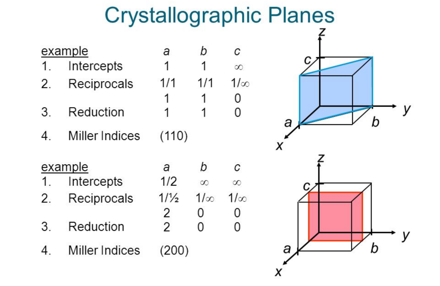
اندیسهای بلوری (صفحات)
نکته مهم:
اندیس میلر یک صفحه و جهت عمود بر آن صفحه یکسان هستند.
به عنوان مثال، اندیس وجه مکعب که عمود بر محور $ [100] $ است، برابر با $ (100) $ است و اندیس محور $ [100] $ نیز برابر با $ (100) $ است. همچنین، اندیس صفحه اکتاهدرال در مکعب $ (111) $ و اندیس قطر مکعب که عمود بر آن است نیز $ [111] $ است.
اندیسهای بلوری (صفحات) در شبکه هگزاگونال
نکته:
اندیس میلر صفحات و جهات در بلورهای هگزاگونال به صورت چهار رقمی بیان میشود و همواره به فرم $ (hkil) $ است. در اینجا $ h $، $ k $ و $ i $ مربوط به سه محور در صفحه پایه هستند و $ l $ به محور عمود بر صفحه پایه اشاره دارد. رابطه زیر بین $ h $ و $ k $ و $ i $ برقرار است:
$$ i = -(h + k) $$
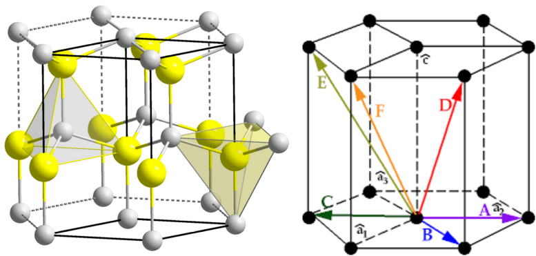
اندیسهای بلوری (صفحات)
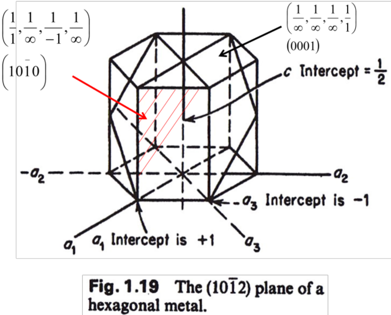
مقدمهای بر ساختار بلوری فلزات
- ساختار بلوری فلزات:
- اغلب فلزات به یکی از ساختارهای زیر متبلور میشوند:
- مکعبی:
- مکعب ساده (SC)
- مکعب مرکز دار (BCC)
- مکعب با وجوه مرکزدار (FCC)
- هگزاگونال فشرده (HCP)
- تصویر: نمایش انواع ساختارهای بلوری (فلزات بلوری)
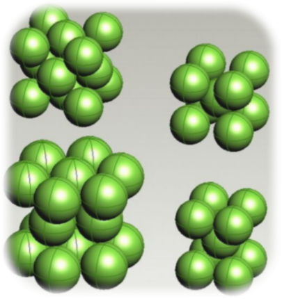
سیستم مکعبی ساده (SC)
- ویژگیهای ساختاری سیستم SC:
- موقعیت اتمها: اتمها در گوشههای مکعب قرار دارند.
- عدد همسایگی: هر اتم دارای ۶ اتم همسایه نزدیک است.
- مدل کرات سخت (Hard-Ball Model): شعاع هر کره نصف فاصله مراکز دو اتم چسبیده به هم است.
-
حجم شبکه:
- اگر یال شبکه (a) باشد، حجم شبکه خواهد بود:
$$ V = a^3 $$
-
تصویر: سیستم مکعبی ساده (SC)

تراکم و عدد همسایگی در SC
- ضریب تراکم اتمی (APF): نسبت حجم اتمها به حجم سلول واحد.
- تراکم چگالی صفحهای (PPD):
- برای صفحه ( [100] ) در سیستم SC: $$ PPD_{[100]} = \frac{\pi R^2}{(2R)^2} = 0.785 $$
- جهات فشرده: یالهای مکعب جهات فشرده ساختار هستند.
- نمونه: شبکه بلوری مکعبی ساده سدیم کلرید (NaCl)
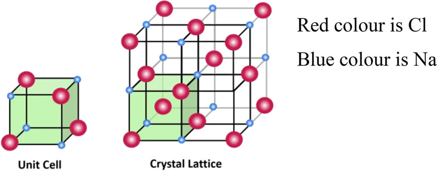
سیستم مکعبی مرکزدار (BCC)
- ویژگیهای ساختاری سیستم BCC:
- موقعیت اتمها: هر اتم گوشه به ۸ سلول تعلق دارد.
- سهم اتم مرکزی: اتم مرکزی فقط به همان سلول تعلق دارد.
- کل تعداد اتمها: ۲ اتم در هر سلول واحد.
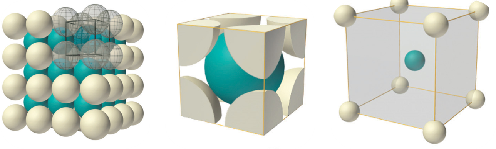
سیستم مکعبی مرکزدار (BCC)
- ساختار داخلی BCC:
- جهات و صفحات فشرده:
- قطرهای مکعب ( \langle 111\rangle ) جهات فشرده
- صفحات ( {110} ) صفحات متراکم
-
رابطه شعاع اتمی با یال شبکه:
$$ a = \frac{4R}{\sqrt{3}} $$
-
ضریب تراکم اتمی (APF):
$$ APF = 0.68 $$
سیستم مکعبی با وجوه مرکزدار (FCC)
- ویژگیهای ساختاری سیستم FCC:
-
تعداد اتمها در هر سلول:
- هر اتم گوشه به ۸ سلول تعلق دارد.
- هر اتم در مرکز هر وجه به ۲ سلول مجاور تعلق دارد.
- در کل ۴ اتم در هر سلول واحد.
$$ \begin{rcases} 8 \times \frac{1}{8} = 1\ 6 \times \frac{1}{2} = 3 \end{rcases} \Rightarrow 1 + 3 = 4 $$
-
ویژگیهای فیزیکی:
- وجود ۴ صفحه فشرده و ۳ جهت فشرده در هر صفحه.
- تأثیر این ساختار بر خواص فیزیکی فلزات (مانند قابلیت تغییر شکل بالا).
- بیشترین فشردگی به این ساختار اختصاص دارد
-
مثالها: آلومینیوم (Al)، مس (Cu)، طلا (Au)
ساختار مکعبی با وجوه مرکزدار (FCC)
ضریب تراکم اتمی و چگالی صفحهای در FCC:
-
APF (Atomic Packing Factor): $$ APF = 0.74 $$
-
PPD[100] (Plane Packing Density): $$ PPD_{[100]} = \frac{\pi R^2 + 4 \times \frac{1}{4} \times \pi R^2}{a^2} = \frac{2 \pi R^2}{\left( \frac{4R}{\sqrt{2}} \right)^2} = 0.785 $$
تصاویر مرتبط: - 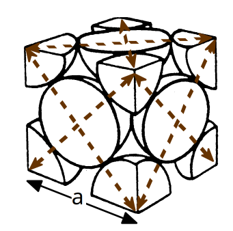 - 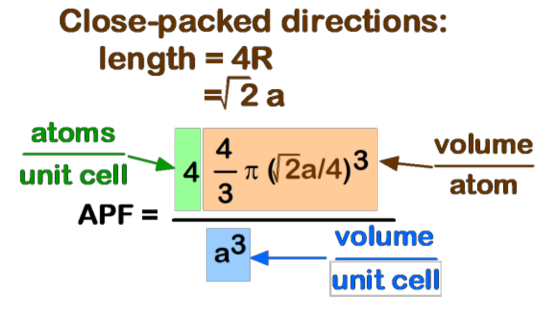
ترتیب چیدمان در ساختار FCC
- توالی چیدمان: ABCABC...
- نمایش دو بعدی:
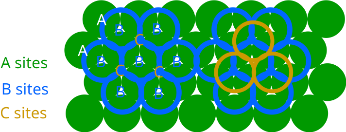
- سلول واحد FCC:
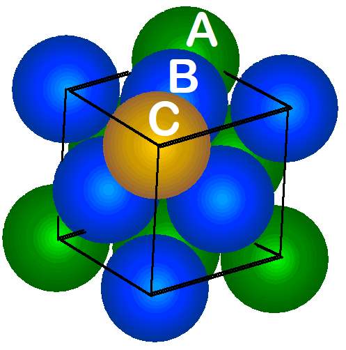
تصاویر تکمیلی ساختار FCC
- 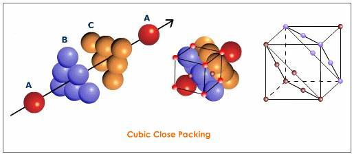
چیدمان صفحات اتمی در ساختار FCC
- توالی چیدمان متوالی صفحات اتمی: ABCABCABC
تصویر مربوطه:
ساختار هگزاگونال فشرده (HCP)
ویژگیهای ساختاری:
- در ساختار HCP، اتمهای صفحه بالایی سلول دقیقاً روی اتمهای صفحه پایینی قرار دارند، اما اتمهای صفحه میانی در موقعیت متفاوتی هستند.
- توالی چیدمان: ABAB...
- نمایش سهبعدی و دوبعدی: (تصاویر مرتبط در دسترس نیستند، لطفاً در صورت وجود اضافه کنید)
ضریب تراکم اتمی و صفحهای در HCP:
- APF: $$ APF = 0.74 $$
- PPF[0001]: $$ PPF_{[0001]} = 0.92 $$
ویژگیهای اضافی ساختار HCP
- صفحه قاعده بلور: دارای بیشترین فشردگی اتمی است و مشابه صفحه اکتاهدرال در FCC دارای 3 جهت فشرده است.
- عدد همسایگی در FCC و HCP: برابر 12 است.
- تعداد اتمها در سلول واحد HCP: $$ \left(12 \times \frac{1}{6}\right) + \left(2 \times \frac{1}{2}\right) + 3 = 6 $$
مقایسه ساختارهای FCC و HCP
شباهتها:
- عدد همسایگی: هر دو برابر 12.
- ضریب تراکم اتمی: هر دو برابر 0.74.
- ضریب تراکم صفحهای در صفحات فشرده: $$ PPF_{[0001]} = PPF_{[111]} = 0.92 $$
تفاوتها:
- توالی چیدمان:
- FCC: ABCABC...
- HCP: ABAB...
نکته: یک جابجایی عرضی در یکی از صفحات فشرده میتواند ساختار را از HCP به FCC یا بالعکس تغییر دهد.
نقص در چیدمان صفحات (Stacking Faults)
- تعریف: زمانی که توالی چیدمان صفحات اتمی در یک بلور ناقص یا ناپیوسته باشد.
- مثال: تبدیل توالی ABCABC به ABCA...CABCA.
- انواع نقصها:
- ذاتی: با حذف بخشی از یک صفحه فشرده ایجاد میشود.
- عارضی: با اضافه شدن بخشی از یک صفحه فشرده ایجاد میشود.
تاثیرات دما:
- تغییر ساختمان اتمی از HCP به FCC یا بالعکس در حین گرمایش یا سرمایش برخی فلزات با ایجاد نقص در چیدمان صفحات اتمی امکانپذیر است.
- مثال: استحاله آلوتروپیک فلز کبالت در 420 درجه سانتیگراد.
مقایسه آرایش اتمی در ساختارهای کریستالی فلزات
| ساختار | تعداد اتم در سلول واحد | عدد همسایگی | تعداد جهات متراکم | تعداد صفحات متراکم | تراکم فضایی | رابطه شعاع اتمی و پارامتر شبکه (a) |
|---|---|---|---|---|---|---|
| SC | 1 | 6 | $3 \langle 100 \rangle$ | ${100}$ | 0.52 | $a = 2R$ |
| BCC | 2 | 8 | $4 \langle 111 \rangle$ | $6 {110}$ | 0.68 | $a = \frac{4R}{\sqrt{3}}$ |
| FCC | 4 | 12 | $6 \langle 110 \rangle$ | $4 {111}$ | 0.74 | $a = \frac{4R}{\sqrt{2}}$ |
| HCP | 6 | 12 | $3 \langle 11\bar{2}0 \rangle$ | $1 (0001)$ | 0.74 | $a = 2R$ |
ساختار بلوری عناصر فلزی
| Face-centered Cubic (FCC) | Hexagonal Close-packed (HCP) | Body-centered Cubic (BCC) |
|---|---|---|
| آلومینیوم (Al) | منیزیم (Mg) | آهن (Fe) (زیر 911.5°C و بین 1396 تا 1538°C) |
| مس (Cu) | روی (Zn) | تیتانیوم (Ti) (بین 882 تا 1670°C) |
| نقره (Ag) | کادمیوم (Cd) | تنگستن (W) |
| طلا (Au) | زیرکونیوم (Zr) (زیر 863°C) | وانادیوم (V) |
| نیکل (Ni) | بریلیوم (Be) | مولیبدن (Mo) |
| سرب (Pb) | فلزات قلیایی (Li, Na, K, Rb, Cs) | |
| پلاتین (Pt) | کروم (Cr) |
اندازه شعاع اتمی برخی از فلزات
| فلز | ساختار کریستالی | شعاع اتمی (nm) | فلز | ساختار کریستالی | شعاع اتمی (nm) |
|---|---|---|---|---|---|
| آلومینیوم | FCC | 0.1431 | مولیبدن | BCC | 0.1363 |
| کادمیوم | HCP | 0.1490 | نیکل | FCC | 0.1246 |
| کروم | BCC | 0.1249 | پلاتین | FCC | 0.1387 |
| کبالت | HCP | 0.1253 | نقره | FCC | 0.1445 |
| مس | FCC | 0.1278 | تانتالوم | BCC | 0.1430 |
| طلا | FCC | 0.1442 | تیتانیوم $(\alpha)$ | HCP | 0.1445 |
| آهن $(\alpha)$ | BCC | 0.1241 | تنگستن | BCC | 0.1371 |
| سرب | FCC | 0.1750 | روی | HCP | 0.1332 |
توضیحات:
- 1 نانومتر (nm) برابر با $10^{-9}$ متر است. برای تبدیل به آنگستروم (Å)، مقدار نانومتر را در 10 ضرب کنید.
محاسبه دانسیته تئوریک فلزات
رابطه کلی: $$ \rho = \frac{n \times A}{V_c \times N_A} $$
متغیرها:
- $n$: تعداد اتمها در سلول واحد
- $A$: وزن اتمی (g/mol)
- $V_c$: حجم سلول واحد ($cm^3$)
- $N_A$: عدد آووگادرو ($6.022 \times 10^{23} mol^{-1}$)
مثال برای مس (Cu):
- دادهها:
- ساختار بلوری: FCC (4 اتم در سلول واحد)
- وزن اتمی: 63.55 g/mol
-
شعاع اتمی: 0.128 nm
-
محاسبات:
- پارامتر شبکه: $$ a = \frac{4R}{\sqrt{2}} = \frac{4 \times 0.128}{\sqrt{2}} = 0.361 nm = 3.61 \times 10^{-8} cm $$
- حجم سلول واحد: $$ V_c = a^3 = (3.61 \times 10^{-8})^3 = 4.72 \times 10^{-23} cm^3 $$
- دانسیته: $$ \rho = \frac{4 \times 63.55}{4.72 \times 10^{-23} \times 6.022 \times 10^{23}} = 8.89 g/cm^3 $$
نکته: دانسیته تئوریک معمولاً بیشتر از دانسیته واقعی است به دلیل وجود نقصها و فضای خالی در ساختار واقعی.
ناهمسانگردی (Anisotropy)
تعریف:
- اگر خواص یک ماده مستقل از جهت باشد، به آن همسانگرد (Isotropic) گفته میشود. در غیر این صورت، ماده ناهمسانگرد (Anisotropic) است.
ویژگیها:
- خواص فیزیکی بلورها معمولاً تابعی از جهت بلوری هستند، زیرا فشردگی و فاصله اتمها در جهات مختلف متفاوت است.
- مثال در بلور BCC:
- فاصله اتمها در سه جهت اصلی: $$ a,\ \sqrt{2}a,\ \sqrt{\frac{3}{2}}a $$
پلیکریستالها:
- بیشتر مواد مهندسی پلیکریستال هستند که هر دانه آن یک تککریستال است.
- اگر دانهها به صورت تصادفی قرار گرفته باشند، خواص ماده به صورت همسانگرد مشاهده میشود.
مدول الاستیسیته (Elastic Modulus)
رابطه:
$$ \sigma = E \times \varepsilon $$
متغیرها:
- $\sigma$: تنش (Stress)
- $E$: مدول الاستیسیته
- $\varepsilon$: کرنش (Strain)
مثال از ناهمسانگردی مکانیکی:
- در آهن BCC، مدول الاستیک تابع جهت کشش است: $$ E_{[111]} = 2E_{[100]} $$
- به دلیل جاذبه اتمی بیشتر در جهات فشردهتر، مدول الاستیک در این جهات بیشتر است.
عوامل موثر بر استحکام فلزات
مقاومت مواد بلوری:
- نقصهای بلوری: مقاومت مواد بلوری را به طور قابل توجهی تحت تاثیر قرار میدهند. هر گونه نقص در ساختار بلوری (مانند نقصهای نقطهای، نقصهای خطی یا نقصهای صفحهای) میتواند تاثیر زیادی بر روی خواص مکانیکی ماده داشته باشد.
دستهبندی نقصها:
- نقصهای نقطهای: شامل جابجایی اتمها، حفرهها و ناخالصیهای بینابینی است.
- نقصهای خطی: شامل نابهجاییها (Dislocations) میشود.
- نقصهای صفحهای: شامل نقصهای چیدمان صفحات، دوگانگیهای مکانیکی، و مرزهای دانه است.
نابهجاییها (Dislocations)
تعریف و مفهوم:
- نابهجایی به عنوان نقصی در ساختار بلوری شناخته میشود که منجر به تغییر در چیدمان منظم اتمها در یک بلور میشود.
انواع نابهجاییها:
- نابهجایی لبهای (Edge Dislocation):
- در این نوع، یک صفحه از اتمها به طور ناقص به درون بلور وارد شده و باعث انحراف در نظم بلوری میشود.
-
تصویر مرتبط: (در دسترس نیست، لطفاً در صورت وجود اضافه کنید)
-
نابهجایی پیچی (Screw Dislocation):
- یک خط از اتمها در یک جهت خاص به نحوی جابجا شده که یک شکل پیچ مانند در ساختار بلوری ایجاد میکند.
-
تصویر مرتبط: (در دسترس نیست، لطفاً در صورت وجود اضافه کنید)
-
نابهجایی مخلوط (Mixed Dislocation):
- ترکیبی از دو نوع نابهجایی لبهای و پیچی است.
اثر نابهجاییها:
- نابهجاییها از عواملی هستند که باعث کاهش استحکام بلورها میشوند. حضور نابهجاییها باعث ایجاد لغزش بین صفحات بلوری میشود که در نهایت منجر به تغییر شکل پلاستیک میشود.
مفاهیم مرتبط با نابهجاییها
بردار برگرز (Burgers Vector)
- تعریف: برداری که میزان و جهت تغییر چیدمان اتمها در یک نابهجایی را نشان میدهد.
- ویژگیها: بردار برگرز به نابهجاییها وابسته است و در ساختارهای بلوری مختلف، اندازه و جهتهای مختلفی دارد.
- تصویر مربوطه: (در دسترس نیست، لطفاً در صورت وجود اضافه کنید)
دانسیته نابهجاییها
- تعریف: تعداد نابهجاییها در واحد حجم یا سطح.
- واحد: $cm^{-2}$
- اثر: افزایش دانسیته نابهجاییها میتواند منجر به افزایش استحکام ماده شود، زیرا حرکت نابهجاییها با یکدیگر باعث کاهش حرکت کلی آنها میشود.
تنش تسلیم (Yield Stress)
رابطه تنش تسلیم با دانسیته نابهجاییها: $$ \tau = \tau_0 + k\sqrt{\rho} $$
- متغیرها:
- $\tau$: تنش تسلیم
- $\tau_0$: تنش پایه
- $k$: ثابت ماده
- $\rho$: دانسیته نابهجاییها
مثال: در فلزات، افزایش دانسیته نابهجاییها منجر به افزایش استحکام تسلیم میشود. این پدیده به عنوان اثر تقویت کار (Work Hardening) شناخته میشود.
انواع مکانیزمهای تقویت (Strengthening Mechanisms)
- تقویت با کاهش اندازه دانهها:
- رابطه هال-پچ (Hall-Petch): $$ \sigma_y = \sigma_0 + k \frac{1}{\sqrt{d}} $$
- متغیرها:
- $\sigma_y$: تنش تسلیم
- $\sigma_0$: تنش پایه
- $k$: ثابت ماده
- $d$: قطر دانهها
-
مفهوم: با کاهش اندازه دانهها، مرزهای دانهها افزایش مییابد که باعث جلوگیری از حرکت نابهجاییها میشود و در نتیجه استحکام ماده افزایش مییابد.
-
تقویت با محلولهای جامد:
-
مفهوم: افزودن عناصر آلیاژی به یک فلز پایه میتواند باعث ایجاد اعوجاج در شبکه بلوری شود که منجر به مقاومت بیشتر در برابر حرکت نابهجاییها میشود.
-
تقویت با رسوبگذاری (Precipitation Hardening):
-
مفهوم: در این روش، ذرات کوچک و سخت (رسوبات) در داخل فلز پراکنده میشوند که حرکت نابهجاییها را دشوار میکند.
-
تقویت با سردکاری (Work Hardening):
- مفهوم: افزایش دانسیته نابهجاییها از طریق تغییر شکل پلاستیک باعث افزایش استحکام ماده میشود. این فرآیند به عنوان سختشدگی کرنشی نیز شناخته میشود.
تاثیر سردکاری بر ساختار بلوری
مراحل سردکاری:
- کرنش و افزایش دانسیته نابهجاییها:
-
با اعمال نیرو به فلز و ایجاد تغییر شکل پلاستیک، دانسیته نابهجاییها افزایش مییابد.
-
افزایش استحکام و سختی:
-
با افزایش دانسیته نابهجاییها، مقاومت فلز در برابر تغییر شکل بیشتر میشود که به عنوان افزایش سختی و استحکام شناخته میشود.
-
کاهش انعطافپذیری:
- افزایش سردکاری باعث کاهش انعطافپذیری فلز میشود.
نمودار تنش-کرنش برای سردکاری:
- نمودار مرتبط: (در دسترس نیست، لطفاً در صورت وجود اضافه کنید)
مکانیزمهای بازیابی و بازپخت (Recovery and Recrystallization)
- بازیابی (Recovery):
-
مفهوم: در این مرحله، نابهجاییها بازآرایی میشوند و تنشهای داخلی کاهش مییابند، اما دانههای جدید تشکیل نمیشوند.
-
بازپخت (Recrystallization):
-
مفهوم: در این مرحله، دانههای جدید و بدون نابهجایی در دماهای بالا تشکیل میشوند که باعث کاهش سختی و افزایش انعطافپذیری ماده میشود.
-
رشد دانه (Grain Growth):
- مفهوم: پس از بازپخت، اگر ماده در دمای بالا باقی بماند، دانههای جدید شروع به رشد میکنند که ممکن است منجر به کاهش استحکام ماده شود.
دیاگرام بازیابی، بازپخت و رشد دانه:
- دیاگرام مرتبط: (در دسترس نیست، لطفاً در صورت وجود اضافه کنید)